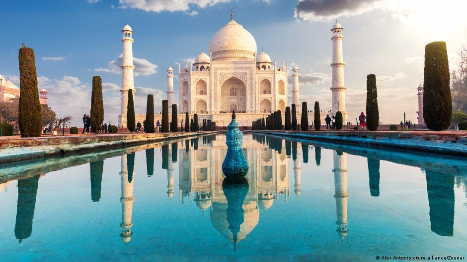

Tag Mahal 
This mausoleum complex in Agra, India, is regarded as one of the world's most iconic monuments and is perhaps the finest example of Mughal architecture. It was built by Emperor Shah Jahān (reigned 1628-58) to honor his wife Mumtāz Maḥal (“Chosen One of the Palace”), who died in 1631 giving birth to their 14th child. It took about 22 years and 20,000 workers to construct the complex, which includes an immense garden with a reflecting pool. The mausoleum is made of white marble that features semiprecious stones in geometric and floral patterns. Its majestic central dome is surrounded by four smaller domes. According to some reports, Shah Jahān wished to have his own mausoleum made out of black marble. However, he was deposed by one of his sons before any work began.